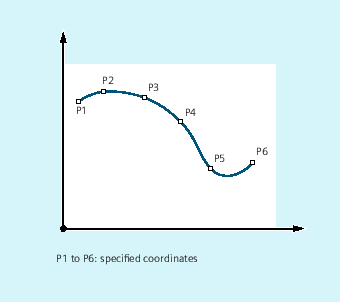
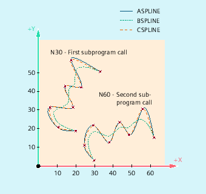

Randomly curved workpiece contours cannot be precisely defined in an analytic form. This is the reason why these type of contours are approximated using a limited number of points along curves, e.g. when digitizing surfaces. The points along the curve must be connected to define a contour in order to generate the digitized surface of a workpiece. Spline interpolation permits this.
A spline defines a curve which is formed from polynomials of 2nd or 3rd degree. The characteristics of the points along the curve of a spline can be defined depending on the spline type being used.
For SINUMERIK solution line, the following spline types are available:
A spline
B spline
C spline
General:
ASPLINE X... Y... Z... A... B... C...BSPLINE X... Y... Z... A... B... C...CSPLINE X... Y... Z... A... B... C...For a B spline, the following can be additionally programmed:
PW=<n>SD=2PL=<value>For A and C splines, the following can be additionally programmed:
BAUTO / BNAT / BTAN
EAUTO / ENAT / ETAN
| Note |
The programmable transitional behavior has no influence on the B spline. The B spline is always tangential to the check polygon at its start and end points. |
Tool radius compensation may be used.
Collision monitoring is carried out in the projection in the plane.
| Program code 1 (all weights 1) |
|---|
| N10 G1 X0 Y0 F300 G64 |
| N20 BSPLINE |
| N30 X10 Y20 |
| N40 X20 Y40 |
| N50 X30 Y30 |
| N60 X40 Y45 |
| N70 X50 Y0 |
| Program code 2 (different weights) |
|---|
| N10 G1 X0 Y0 F300 G64 |
| N20 BSPLINE |
| N30 X10 Y20 PW=2 |
| N40 X20 Y40 |
| N50 X30 Y30 PW=0.5 |
| N60 X40 Y45 |
| N70 X50 Y0 |
| Program code 3 (check polygon) | Comment |
|---|---|
| N10 G1 X0 Y0 F300 G64 | |
| N20 | ; n.a. |
| N30 X10 Y20 | |
| N40 X20 Y40 | |
| N50 X30 Y30 | |
| N60 X40 Y45 | |
| N70 X50 Y0 |
| Program code |
|---|
| N10 G1 X0 Y0 F300 |
| N15 X10 |
| N20 BNAT ENAT |
| N30 CSPLINE X20 Y10 |
| N40 X30 |
| N50 X40 Y5 |
| N60 X50 Y15 |
| N70 X55 Y7 |
| N80 X60 Y20 |
| N90 X65 Y20 |
| N100 X70 Y0 |
| N110 X80 Y10 |
| N120 X90 Y0 |
| N130 M30 |
Main program:
| Program code | Comment |
|---|---|
| N10 G00 X20 Y18 F300 G64 | ; Approach starting point. |
| N20 ASPLINE | ; Activate interpolation type A spline. |
| N30 CONTOUR | ; First subprogram call. |
| N40 ROT Z-45 | ; Coordinate transformation: Rotation of the WCS through -45° around the Z axis. |
| N50 G00 X20 Y18 | ; Approach contour starting point. |
| N60 CONTOUR | ; Second subprogram call. |
| N70 M30 | ; End of program |
Subprogram "contour" (includes the coordinates of the points along the curve):
| Program code | |
|---|---|
| N10 X20 Y18 | |
| N20 X10 Y21 | |
| N30 X6 Y31 | |
| N40 X18 Y31 | |
| N50 X13 Y43 | |
| N60 X22 Y42 | |
| N70 X16 Y58 | |
| N80 X33 Y51 | |
| N90 M1 |
In addition to the spline curve, resulting from the example program (ASPLINE), the following diagram also contains the spline curves that would have been obtained when activating either B or C spline interpolation (BSPLINE, CSPLINE):
See also:
Spline interpolation (ASPLINE, BSPLINE, CSPLINE, BAUTO, BNAT, BTAN, EAUTO, ENAT, ETAN, PW, SD, PL): Further Information
Spline group (SPLINEPATH)